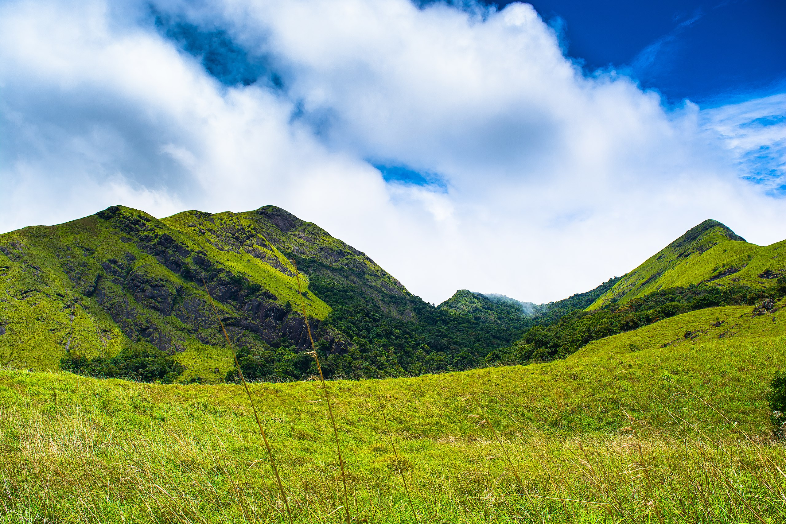
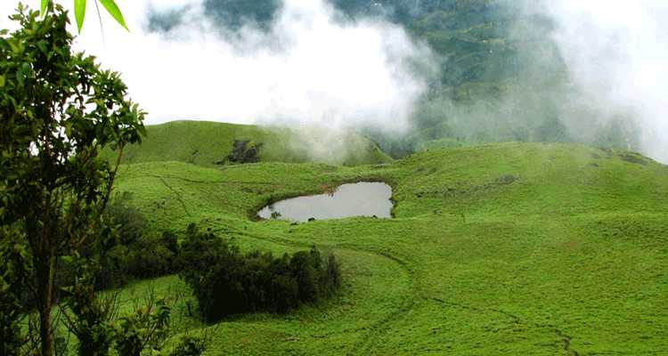

Wayanad
Wayanad is a rural district in Kerala state, southwest India. In the east, the Wayanad Wildlife Sanctuary is a lush, forested region with areas of high altitude, home to animals including Asiatic elephants, tigers, leopards and egrets. In the Ambukuthi Hills to the south, Edakkal Caves contain ancient petroglyphs, some dating back to the Neolithic age.
Top Tourist places in Kasargode
Banasura Dam

Lying in the lap of the Banasura hills in the Wayanad district is the picturesque Banasura Sagar dam. Banasura Dam is the largest earthen dam in the country and the second-largest in Asia. The view of the sprawling reservoir from the top of the dam is breathtaking. Adventures like speed boating are readily available, and a trek up to the Banasura Peak is filled with streams, diverse flora, fauna, lush tropical green and majestic waterfalls. An earthen dam, also known as an embankment dam is created by placing mounds of clay, sand, rock or soil
The view of Banasura Lake from the top of the hill is mesmerising.
Wayanad Wildlife Sanctuary

Wayanad Wildlife Sanctuary is the second largest wildlife sanctuary in Kerala and comprises of rare as well as endangered species of both flora and fauna. It is surrounded by the protected areas of Mudumalai in Tamil Nadu as well as Nagarhole and Bandipur in Karnataka. Founded in the year 1973, the wildlife sanctuary is an integral part of the Nilgiri Biosphere Reserve which was the first biosphere out of the 14 present in India
The sanctuary is spread over an area of 345 square km and comprises of two parts namely Upper Wayanad and Lower Wayanad. Eucalyptus, as well as bamboo trees, are grown in the region.
Chembra Peak
Located close to Meppady and just 8 km south of Kalpetta, stands the highest peak of the Wayanad Hill Range- the Chembra Peak at an altitude of 2000 meters above sea level.
The Chembra peak offers a panoramic view of not only the entire Wayanad district but also a large chunk of Kozhikode, Malappuram and Niligiri districts
The peak, its surrounding lush greenery and the famed heart-shaped lake make it a paradise for travellers to explore